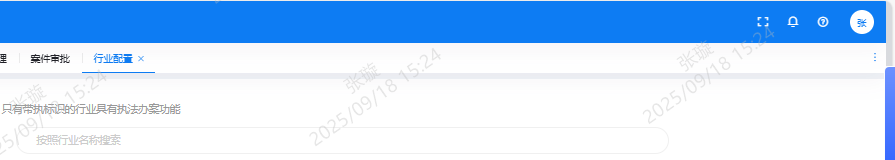

805
1、将没有执法功能的行业进行删除（隐藏）
2、对于选择了非执法功能行业的单位处理规则
- 单位若选择的都是非执法功能的行业，则进行任何有关办案相关操作时都进行提示“当前单位行业无执法办案功能，请联系管理员修改单位行业”
- 比如：PC端点击【案件管理】、PC端点击【案件核查】、移动端点击【简易程序】、移动端点击【普通程序】、移动端点击【案件核查】的时候点击功能模版就进行提示
- 单位若所选择的既有依法功能行业也有非执法功能行业时，则回显有执法功能行业的选择。
- 对于文书配置、审批流配置功能对于行业的选择时，只显示有执法执法功能的行业
3、对历史数据的处理
将历史产生的案件数据进行删除：用不支持执法功能行业创建的案件
以下为具有执法办案功能的行业，请按需选择（支持多选）
805
将行业名称的“司法”修改成“司法行政”